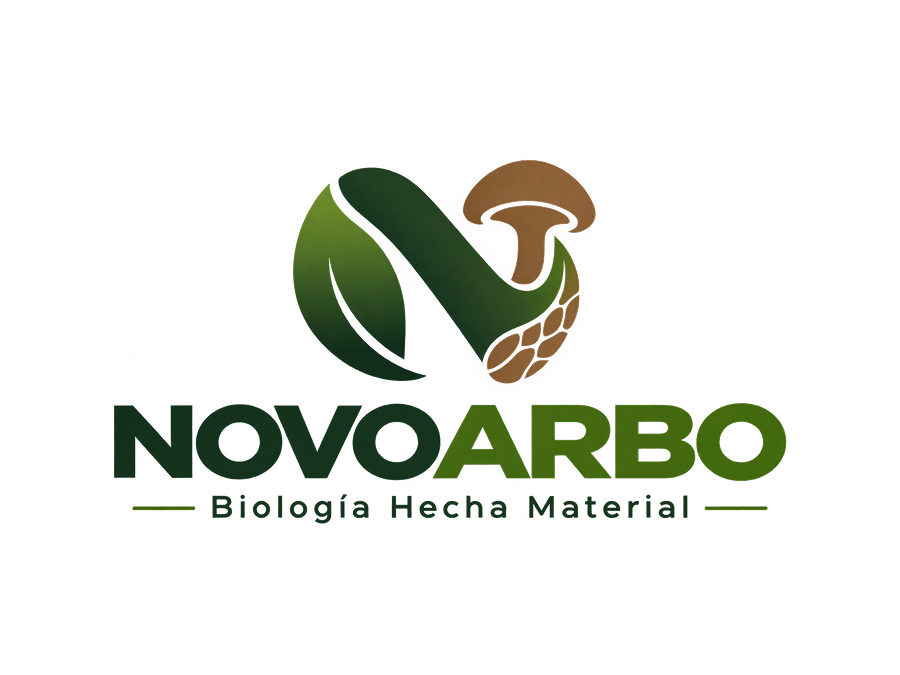
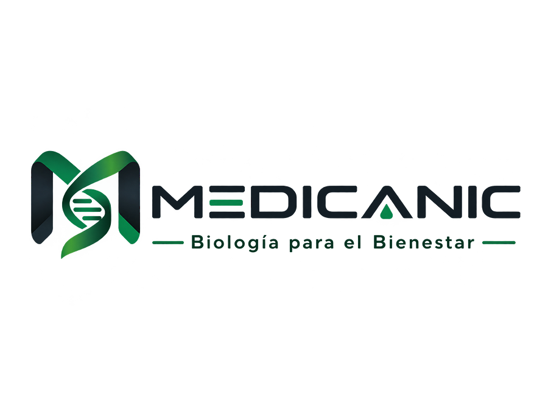
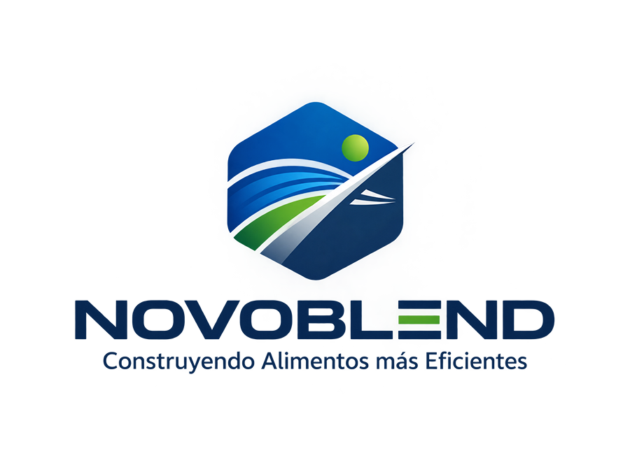

01. Investigación científica e innovación tecnológica
Generar conocimientos y desarrollar tecnologías basadas en la biología para atender necesidades industriales.
 Novoganic
Novoganic
BIOLOGÍA · CIENCIA · INDUSTRIA
Desarrollamos soluciones basadas en la biología para alimentos, salud, limpieza e higiene y biomateriales.
ExplorarESTRUCTURA EMPRESARIAL
Empresas especializadas en desarrollar soluciones biológicas para distintos sectores industriales.

Novoarbo es una empresa científico-tecnológica e industrial especializada en el desarrollo de biomateriales, sus materias primas, componentes funcionales, tecnologías y procesos, para fortalecer las capacidades productivas, tecnológicas y comerciales de los sectores vinculados a estos materiales.

Medicanic es una empresa científico-tecnológica e industrial especializada en el desarrollo de productos, componentes funcionales, tecnologías y procesos para la salud, la limpieza y la higiene, orientados a fortalecer las capacidades productivas, tecnológicas y comerciales de los sectores vinculados al bienestar.

Novoblend es una empresa científico-tecnológica e industrial especializada en el desarrollo de ingredientes, materias primas, componentes funcionales, tecnologías y procesos alimentarios, para fortalecer las capacidades productivas, tecnológicas y comerciales de los sectores vinculados a la industria alimentaria.
IDENTIDAD CORPORATIVA
Orientamos nuestras actividades al desarrollo científico, industrial y empresarial, procurando generar soluciones, fortalecer nuestras capacidades y construir relaciones duraderas.
Generar conocimientos y desarrollar tecnologías basadas en la biología para atender necesidades industriales.
Diseñar y producir productos, materiales, componentes y procesos especializados para los sectores de actividad de Novoganic.
Establecer relaciones comerciales y ofrecer soluciones que respondan a las necesidades y expectativas de los clientes.
Fomentar la coordinación y complementariedad entre las empresas de Novoganic para aprovechar sus capacidades y recursos.
Construir relaciones duraderas con clientes, proveedores, colaboradores y socios mediante la atención responsable, el cumplimiento de compromisos y la transparencia.
Ampliar las capacidades, actividades y oportunidades de negocio de Novoganic, procurando la continuidad, la solidez y el desarrollo del conjunto empresarial.